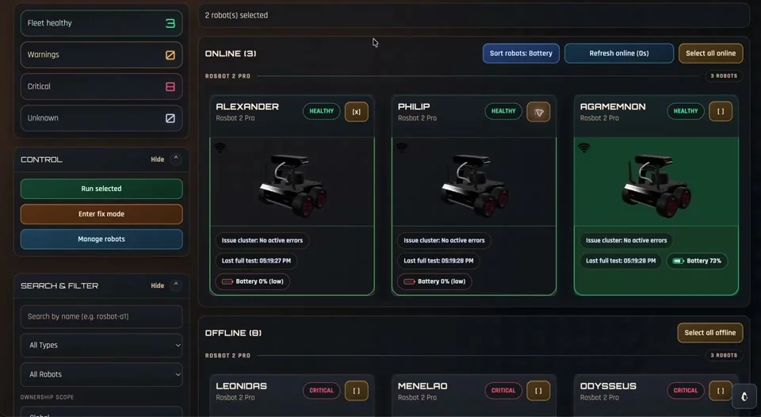

Robotics operations
VIGIL
Monitor a robot fleet, open remote terminals, and run repeatable diagnostics and recovery steps from one dashboard.
FastAPI
Paramiko
ROS

Control loop
From fleet signal to guided recovery
01
Observe
Background monitors keep tabs on connectivity, battery, topics, and runtime — and when a robot comes back online, VIGIL auto-runs its connection checks.
02
Diagnose
Run a versioned test, or drop straight into a live SSH terminal on the robot, streamed into the browser.
03
Recover
A saved fix runs its steps in order, with a per-robot queue preventing overlapping jobs.
Reusable execution engine
The core opens SSH sessions, runs commands, evaluates output, and reports state. Robot-specific checks and fixes live in versioned definition files.